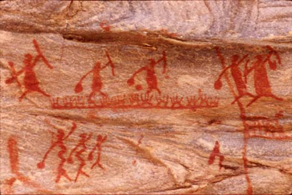
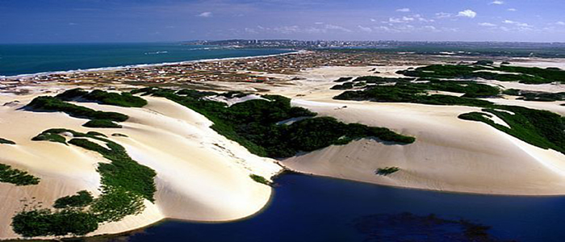

O Rio Grande do Norte conta com diversos pontos turísticos, desde sítios arqueológicos, belezas naturais e polos de ecoturismo. Segundo estatísticas, o estado é visitado por mais de dois milhões de turistas, vindos de outros lugares do estado, de outras regiões do Brasil e até mesmo do exterior. Dados do Ministério do Trabalho e Emprego (MTE) aponta que o Rio Grande do Norte é campeão em investimentos estrangeiros no país. Só em 2002 o estado foi visitado por 1 423 886 turistas. O turismo no Rio Grande do Norte foi divulgado no Brasil e no exterior, fazendo com que o número de voos internacionais subisse de cinco em 2002 para mais de trinta nos dias atuais. O estado acolhe estrangeiros vindos principalmente de países europeus.
Nas regiões do Seridó, Médio Oeste e Alto Oeste Potiguar, já foram descobertos enterramentos (restos) humanos que viveram naquele lugar há mais de dez mil anos, muito antes da descoberta do continente. Em partes do estado e do Nordeste ocorreu o desenvolvimento de uma das mais ricas e expressivas artes rupestres conhecidas no mundo.
Os pontos de visitação que merecem destaque são:
As belezas naturais mais conhecidas no estado no país e no exterior são:
as Dunas de Genipabu,

o Cajueiro do Pirangi (maior do mundo);
piscinas naturais do Pirangi e do Maracajaú;
a Reserva Florestal da Mata Estrela<
br />
e o Parque das Dunas,
além de serras, falésias e lagoas.<
br />
Natal, capital e município mais populoso do estado, é porta de entrada para o turismo no Rio Grande do Norte.
Mossoró, segundo município mais importante depois da capital, é um destino especialmente procurado.